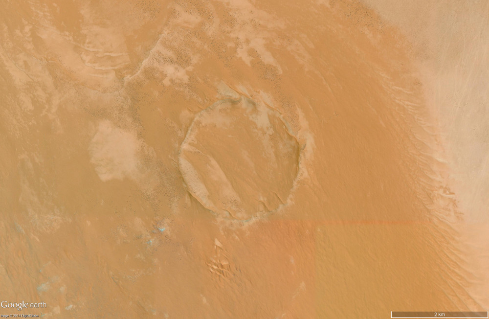
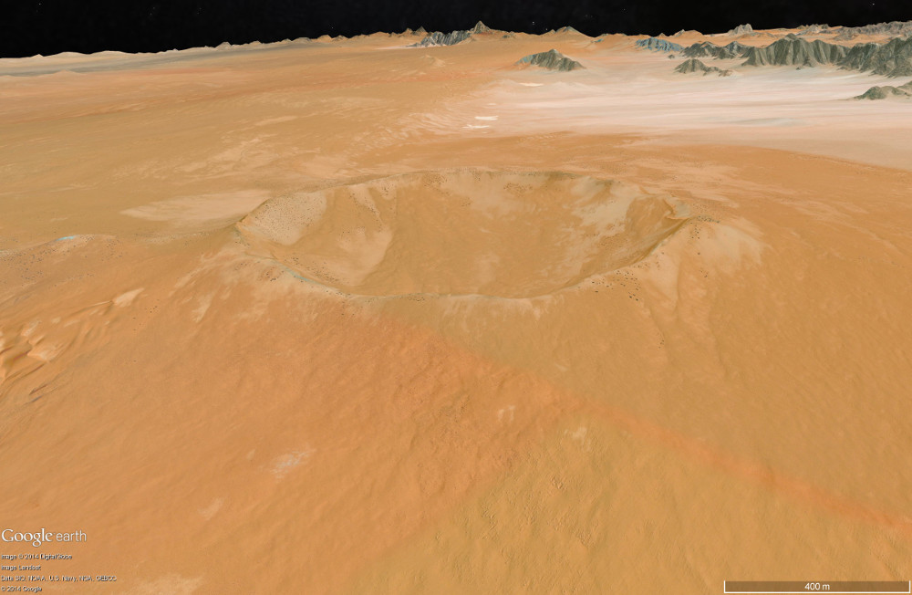
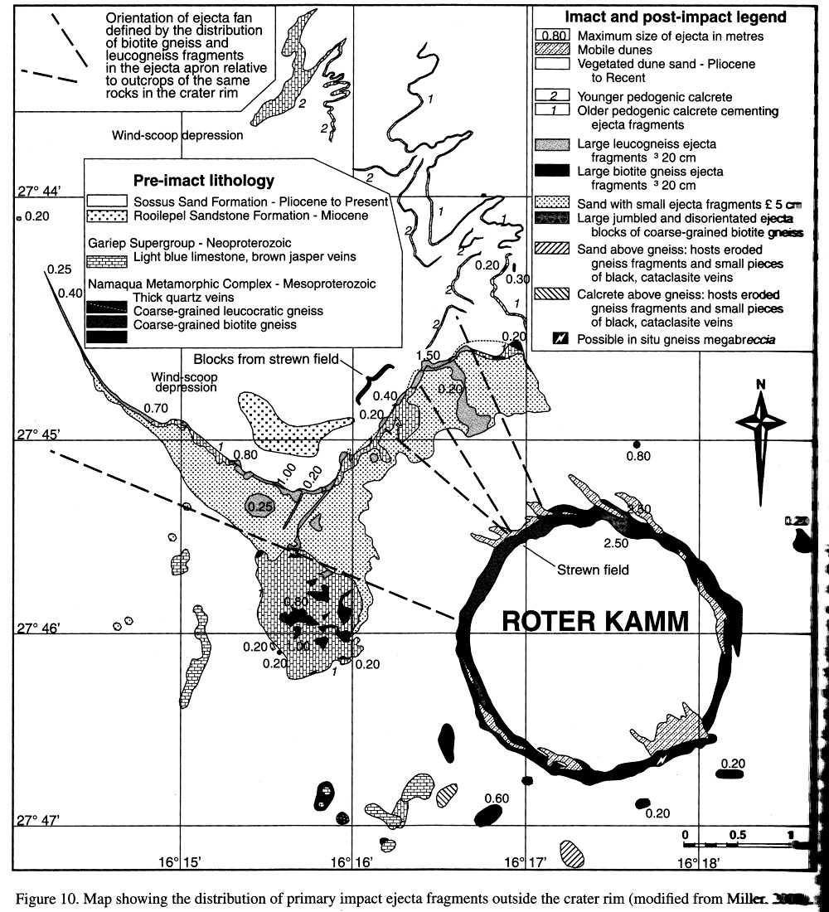

| Crater Name(s) | Roter Kamm | |
| Country | Namibia | |
| Longitude | 16 deg 18 min E | |
| Latitude | 27 deg 46 min South | |
| Diameter (km) | 2.5 km | |
| Age | Less than 5 million years | |
| Description | Well preserved crater with xx m high rim, sediment filled crater floor and ejecta units exposed around the rim and outside the crater. | |
| References | Reimold W U and Koebert C. 2014. Impact Structures in Africa: A Review. Journal of African Earth Sciences, vol. 93, p. 57-175. | Miller R McG. 2010. Roter Kamm Impact Crater of Namibia: New Data on Rim Structure, Target Rock Geochemistry, Ejecta and Meteorite Trajectory. In: Gibson R L, and Reimold W U, eds. Large Meteorite Impacts and Planetary Evolution IV. Geological Society of America Special Publication 465, p. 489-508. |
| Date Data Entered | 2015 06 02 |
Landsat 8 pansharpened RGB (Bands 4, 3 and 2 - Path 178, Row 79) image of the Roter Kamm impact structure.
Vertical Google Earth image of the Roter Kamm impact structure.
Oblique Google Earth image looking to the north west across the Roter Kamm impact structure.
Oblique Geology and Ejecta Distribution across the Roter Kamm impact structure (Miller 2010).